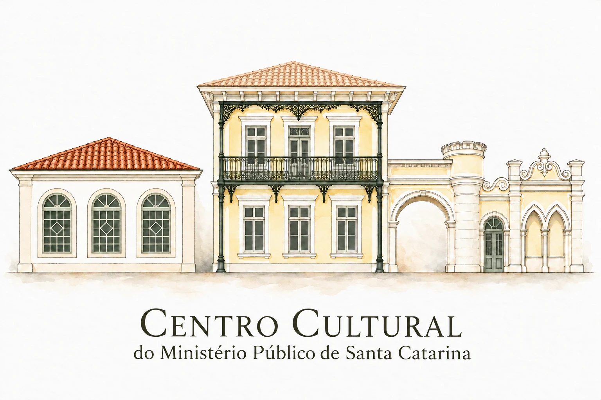

Casa Bocaiuva
Construção luso-brasileira de meados do século XIX. Recebe a exposição Hassis: um olhar em movimento.

do Ministério Público de Santa Catarina
Exposições inaugurais · A partir de 14 de dezembro de 2026
Hassis: um olhar em movimento
Sob o olhar de Edla
Entre o antigo e o novo
do tombamento ao Centro Cultural do Ministério Público de Santa Catarina
Boas-vindas
Mais de um século de histórias que se entrelaçam com a formação da cidade, da antiga Praia de Fora aos dias atuais.
Bem-vindo ao Centro Cultural do Ministério Público de Santa Catarina. Este espaço representa o compromisso institucional do MPSC com a preservação da memória, com a valorização do patrimônio histórico e com a ampliação do acesso da sociedade aos bens culturais sob sua guarda.
Mais do que um espaço expositivo, o Centro Cultural do MPSC se afirma como um lugar de encontro, pesquisa, educação e diálogo com a comunidade, comprometido com a acessibilidade universal, a sustentabilidade e a difusão do conhecimento.
Entre e conheça não apenas uma edificação histórica, mas participe de uma narrativa viva, que conecta passado, presente e futuro da memória catarinense.
Os espaços
Construção luso-brasileira de meados do século XIX. Recebe a exposição Hassis: um olhar em movimento.
Casarão eclético do século XIX, lar das famílias Hackradt, Scheele e von Wangenheim. Abriga as exposições inaugurais Sob o olhar de Edla e Entre o antigo e o novo.
Anexo da Casa do Barão e antiga sede consular, receberá futuramente um café.
A partir de 14 de dezembro de 2026

Casa Bocaiuva
Nos 100 anos de nascimento do artista, obras das séries Hassis Florianópolis, Hassis Moderno e Hassis Mar. Até 31 de março de 2027.
Casa do Barão · Térreo · Sala 2
Da antiga Praia de Fora aos futuros imaginados para a casa, a mostra percorre as famílias, o consulado e a trajetória de Edla, fotógrafa e, segundo a Cinemateca Brasileira, primeira cineasta catarinense.
Casa do Barão · Pavimento superior · Sala 3
Do tombamento ao Centro Cultural do Ministério Público de Santa Catarina: a preservação das duas casas e sua conversão em espaço público de cultura, com uma releitura do gradil a partir do símbolo Sankofa.
Visite
Segunda a sexta-feira, das 10h às 18h.
Rua Bocaiúva, 1750, Centro, Florianópolis/SC.
Visitas escolares e em grupo mediante agendamento.
Agendar visita